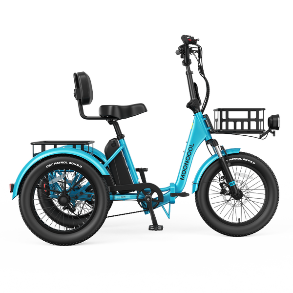
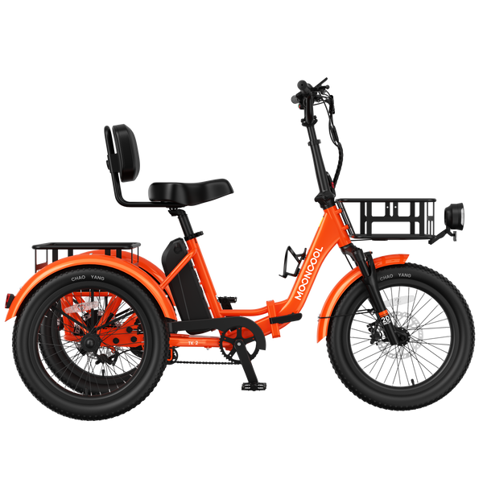
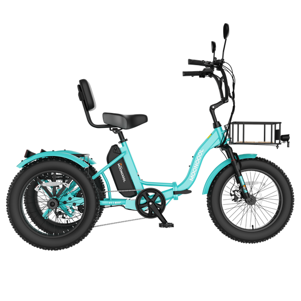

Three-wheeled, foldable, solar-chargeable. The complete Mooncool lineup ranked for off-grid property, errands, and everyday rides.
We cover solar generators. So why are we writing about electric tricycles?
Because the math is too good to ignore.
If you already own a solar generator — and most of our readers do or are buying one — you have a free fuel station sitting in your house. A Mooncool trike charges from a standard wall outlet, drawing about 150–250 watts. That’s less than a mini-fridge. Plug it into the AC outlet on your BLUETTI, EcoFlow, or ALLPOWERS unit, let your solar panels refill the generator during the day, and you have a completely off-grid transportation loop that costs zero dollars to operate.
No gas. No oil changes. No insurance in most states. No parking hassles. Just solar-powered rides.
We’ve tested Mooncool’s full lineup against the same standards we use for solar generators: real specs, honest pros and cons, and practical use cases. Here’s what we found.
| Model | Motor | Battery | Range | Weight Cap. | Price | Best For |
|---|---|---|---|---|---|---|
| TOP PICK TK Pro | 750W (1,310W peak) |
48V × 20Ah (960Wh) |
45–100 mi | 450 lbs | $1,700 | Off-grid property, long rides, max range |
| BEST VALUE TK2 Folding | 500W (1,092W peak) |
48V × 15Ah (720Wh) |
35–75 mi | 450 lbs | $1,500 | Daily commuting, errands, storage |
| OFF-ROAD FT1 Fat Tire | 500W (1,092W peak) |
48V × 14.5Ah (696Wh) |
35–60 mi | 400 lbs | $1,350 | Dirt roads, gravel, rough terrain |

The TK Pro is Mooncool’s top-of-the-line trike, and it’s the one we’d pick for off-grid property owners. A 750W rear-drive motor with 1,310W peak power and 90Nm of torque handles hills, gravel, and loaded cargo runs that would stall cheaper trikes. The 48V × 20Ah battery is the biggest in the lineup — 960 watt-hours — delivering up to 100 miles on pedal assist or 45–60 miles on throttle alone.
Key features that matter:

The TK2 is the commuter pick. You give up the torque sensor and 6-speed drivetrain, but you gain a reverse mode (for tight parking), a 3.5-inch color TFT display, and five named pedal assist modes (Eco, Tour, Sport, Sport+, Turbo). At $1,500, it’s $200 less than the TK Pro with 75% of the range.
The 720Wh battery charges from any solar generator with a 300W+ outlet. Real-world range on mixed pedal-assist and throttle: 40–55 miles. That covers grocery runs, farmers market trips, and neighborhood rides without touching the charger.
Standout features: Reverse mode at under 2.5 MPH, 100,000+ fold-cycle endurance rating, 80-lux integrated headlight, vacuum foam seat with adjustable backrest, 40mm front suspension with lockout.

The FT1 is purpose-built for riders who leave pavement. Four-inch fat tires grip dirt, loose gravel, wet grass, and packed sand where standard 3-inch tires would slip. If your off-grid property has unpaved roads or you want to ride trails and beaches, this is the only Mooncool model to consider.
Trade-offs are real: 400 lb capacity (50 lbs less than the others), shorter 60-mile max range, and no folding frame. But at $1,350, it’s the most affordable trike in the lineup with the most capable tires.
Every Mooncool trike comes with a standard AC charger. That means any solar generator with an AC outlet works as a charger. Here’s the math:
A 600–1,000Wh solar generator can fully charge the TK2 or FT1 once per day. Charge overnight, ride all day, let solar panels refill the generator. Works for daily errands.
A 2,000Wh+ solar generator can charge the TK Pro from empty and still have capacity left for your house loads. Charge the trike and your phone, laptop, and lights from the same solar setup.
Already have a solar generator? Check our guides for the best pairing:
Yes. Every Mooncool trike charges from a standard AC outlet, which is available on any solar generator. The charger draws 150–250W. A 600Wh+ solar generator handles a full charge. A 2,000Wh+ unit charges the trike while still running house loads. Solar panels refill the generator during the day for a fully off-grid transportation loop.
The TK Pro goes up to 100 miles (pedal assist) or 45–60 miles (throttle only). The TK2 reaches 75 miles max. The FT1 Fat Tire gets 60 miles max. Real-world range depends on rider weight, terrain, wind, temperature, and pedal assist level. Expect roughly 60–70% of the max range on throttle-heavy riding.
Yes. Three-wheel stability means no balancing required. The TK Pro has a 12.2-inch step-over height — lower than most step-through bicycles. Hydraulic disc brakes stop reliably with minimal hand effort. The speed differential keeps turns stable. The vacuum foam seat with adjustable backrest supports extended rides. 450 lb weight capacity accommodates most riders plus cargo.
In most US states, electric trikes classified as Class 2 e-bikes (top speed under 20 MPH, throttle-assisted) do not require a driver’s license, registration, or insurance. Mooncool trikes are Class 2 at 15.5 MPH. However, regulations vary by state and municipality. Check your local laws before riding on public roads. Some areas restrict e-bikes on certain paths or require helmets.
The TK Pro for paved or packed-dirt roads. Its 100-mile range and 750W motor handle the longest distances and steepest grades. The FT1 Fat Tire is better for rough, unpaved terrain with its 4-inch tires, though range drops to 60 miles. Both charge from any solar generator with a standard AC outlet.
Browse the full Mooncool lineup. Free shipping, 1-year warranty, 30-day returns.
Browse Mooncool Trikes Or explore all our solar generator reviews →